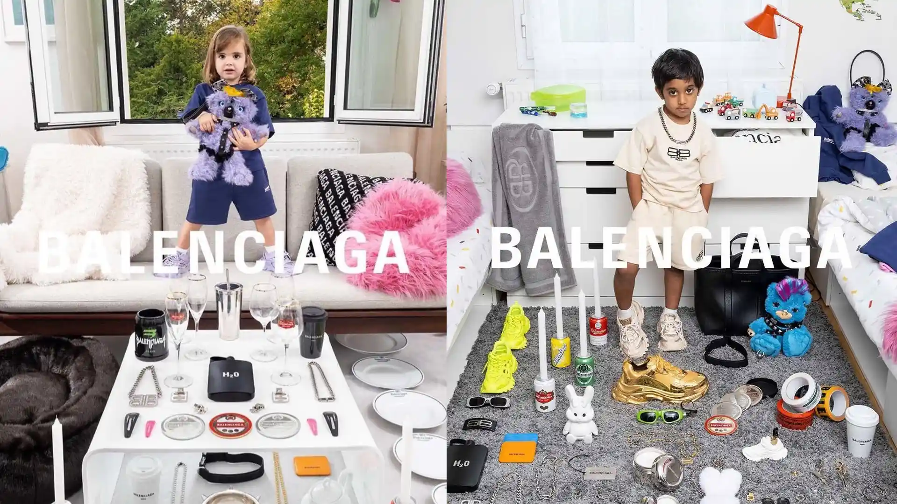

EL EQUILIBRIO ENTRE CONTROVERSIA Y ÉXITO
Balenciaga ha enfrentado varias controversias significativas en los últimos años, especialmente bajo la dirección de Demna Gvasalia. Estas situaciones han impactado su reputación y ventas, pero también han llevado a la marca a replantear su estrategia para el futuro. Por un lado, las controversias han generado una reacción pública que, aunque negativa en algunos casos, también ha logrado mantener a la marca en los titulares de los medios y en el centro de las conversaciones dentro y fuera del mundo de la moda. Esto ha sido clave para mantener a Balenciaga relevante en un mercado altamente competitivo, donde las nuevas audiencias, especialmente las generaciones más jóvenes, buscan constantemente marcas que no solo vendan productos, sino que también generen discursos e impacten la sociedad. Sin embargo, también han surgido preocupaciones sobre los límites de la provocación en el marketing de lujo, y sobre si este tipo de tácticas podría alienar a ciertos grupos de consumidores a largo plazo.


CAMPAÑAS PUBLICITARIAS INADECUADAS
Una de las controversias más notorias que Balenciaga enfrentó ocurrió en noviembre de 2022, cuando la marca lanzó dos campañas publicitarias que generaron una fuerte reacción pública y dejaron una huella significativa en su reputación. Ambas campañas, por su naturaleza provocativa y el uso de imágenes controvertidas, desataron un torrente de críticas, llevando a la marca a retractarse rápidamente y pedir disculpas por los elementos que fueron percibidos como inadecuados. Estas situaciones reflejan los riesgos inherentes a la estrategia de marketing audaz y disruptiva de Balenciaga, que, si bien ha permitido a la marca mantenerse relevante en la conversación global, también ha dejado expuesta a la firma a la controversia.
 Campaña "Gift Collection": La primera campaña polémica fue la llamada "Gift Collection", lanzada en noviembre de 2022. Esta campaña presentaba a niños pequeños posando con osos de peluche que llevaban arneses de cuero y otros accesorios asociados con el mundo del BDSM. Esta imagen desató una ola de reacciones indignadas en las redes sociales y en los medios tradicionales, con muchos críticos acusando a la marca de hipersexualizar a los niños y de romper normas morales básicas en la moda. La combinación de niños y elementos explícitamente sexuales fue vista como una transgresión, provocando que los consumidores, los defensores de los derechos de los niños y diversas organizaciones de bienestar infantil, se unieran en su rechazo hacia la campaña.
Colaboración con Adidas: La segunda controversia surgió en el marco de una colaboración con Adidas, una de las marcas más emblemáticas en el mundo del deporte. En la campaña, Balenciaga incluyó una imagen de documentos judiciales relacionados con pornografía infantil, lo que generó una nueva ola de críticas. Los documentos, que aparentemente formaban parte de un escenario de fondo en una de las fotos de la campaña, estaban vinculados a un caso judicial relacionado con pornografía infantil, lo que hizo que los críticos acusaran a la marca de minimizar o incluso de hacer referencia insensiblemente a un tema tan serio y sensible. Aunque no se trataba de una referencia directa al contenido de la campaña, la inclusión de estos documentos, por su naturaleza, resultó profundamente perturbadora y fue vista por muchos como una falta de sensibilidad hacia el tema de la abuso infantil.
IMPACTO EN VENTAS Y ESTRATEGIA
A raíz de las controversias generadas por las campañas publicitarias de Balenciaga en 2022, la marca experimentó una caída significativa en sus ventas, particularmente en mercados clave como Estados Unidos y el Reino Unido, donde la marca tiene una fuerte presencia. La reacción pública ante las campañas, que involucraban imágenes de niños y elementos relacionados con la sexualización y temas legales sensibles, tuvo un impacto directo en la percepción del consumidor y en la demanda de sus productos. A pesar de que las ventas minoristas comparables (que miden las ventas de tiendas ya establecidas) aumentaron un 27% durante 2022, lo que indica que hubo un crecimiento en el volumen de compras en muchas de sus tiendas, las ventas mayoristas, que involucran la distribución de productos a través de otros canales como tiendas de lujo asociadas y grandes retailers, se contrajeron un 6%. Esto se debió a que las tiendas multimarca y otros distribuidores fueron reacios a seguir promoviendo los productos de Balenciaga, especialmente después del escándalo que rodeó las campañas. Los mayoristas vieron una caída en las compras debido al temor de asociarse con una marca en medio de una controversia pública, lo que llevó a una reducción de las ventas en el canal mayorista y, por lo tanto, a una contracción en los ingresos de este segmento.
FUTURO DE BALENCIAGA
Para mitigar el impacto negativo de las controversias que afectaron a la marca en 2022, Balenciaga ha decidido revisar y reforzar sus procesos internos con el fin de restaurar su reputación y asegurar que situaciones similares no vuelvan a ocurrir en el futuro. La marca ha reconocido que la velocidad con la que lanzan sus campañas debe ir acompañada de un estricto proceso de revisión para evitar errores graves. Este enfoque proactivo tiene como objetivo garantizar que todas las campañas publicitarias sean evaluadas de manera exhaustiva y sean alineadas con los valores de la marca, así como con las expectativas del público y las normas éticas.
A pesar del escándalo, Balenciaga sigue siendo una marca influyente en el mundo de la moda. Su capacidad para generar conversación y mantenerse relevante en un mercado altamente competitivo es una parte integral de su estrategia de marca a largo plazo. La habilidad de Balenciaga para atraer la atención del público, incluso en medio de la controversia, es una prueba de su enfoque único y disruptivo en el marketing. Esta capacidad de captar el interés de los consumidores, incluso cuando las campañas no siguen las normas tradicionales de la industria, ha sido un componente clave del éxito de la marca en los últimos años. Sin embargo, el éxito futuro de Balenciaga no está garantizado únicamente por su habilidad para generar conversación. En un mercado saturado de marcas de lujo que luchan por atraer la atención de consumidores más jóvenes y digitales, la capacidad de Balenciaga para ajustar su enfoque creativo y manejar las críticas será crucial para su sostenibilidad. La marca necesitará encontrar un equilibrio delicado entre continuar siendo provocativa y innovadora y asegurarse de que sus acciones no comprometan sus valores éticos y sociales. La presión para mantener la integridad de la marca mientras se exploran nuevas formas de creatividad será un desafío importante.